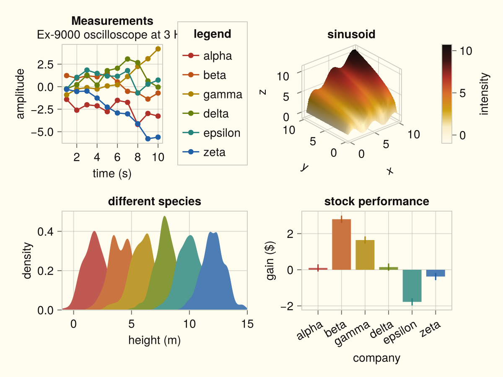
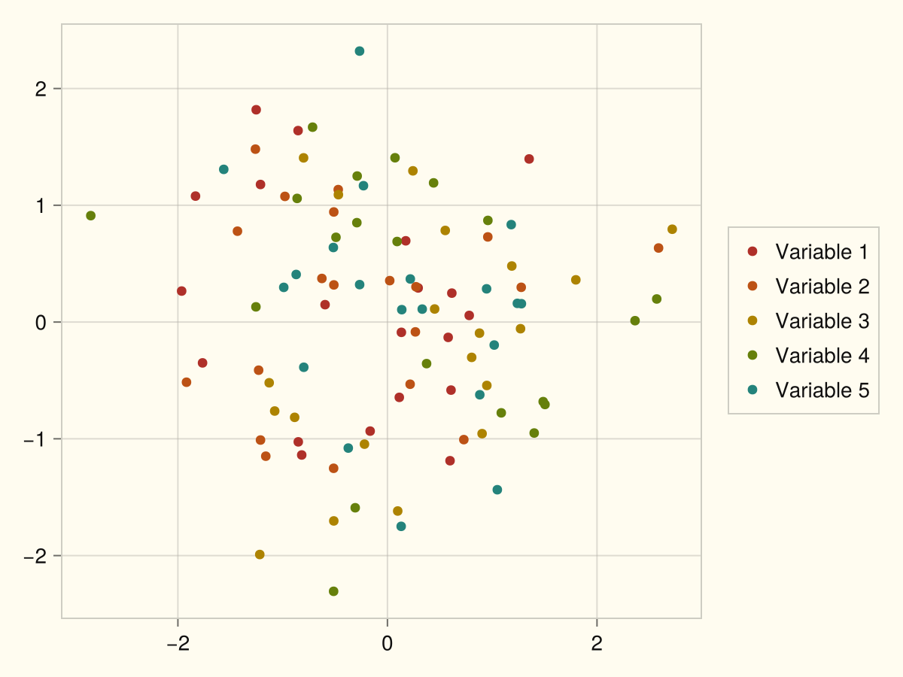
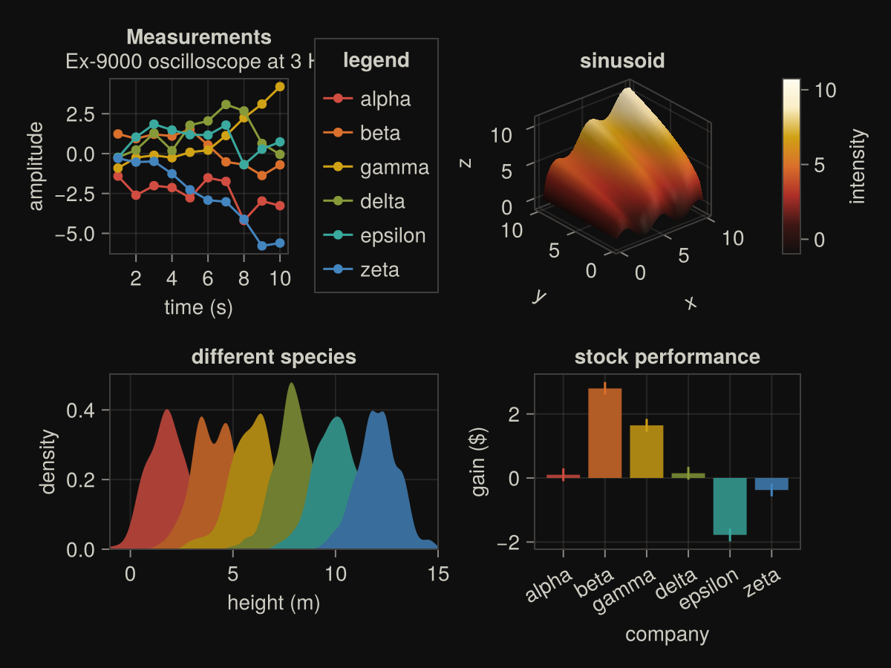
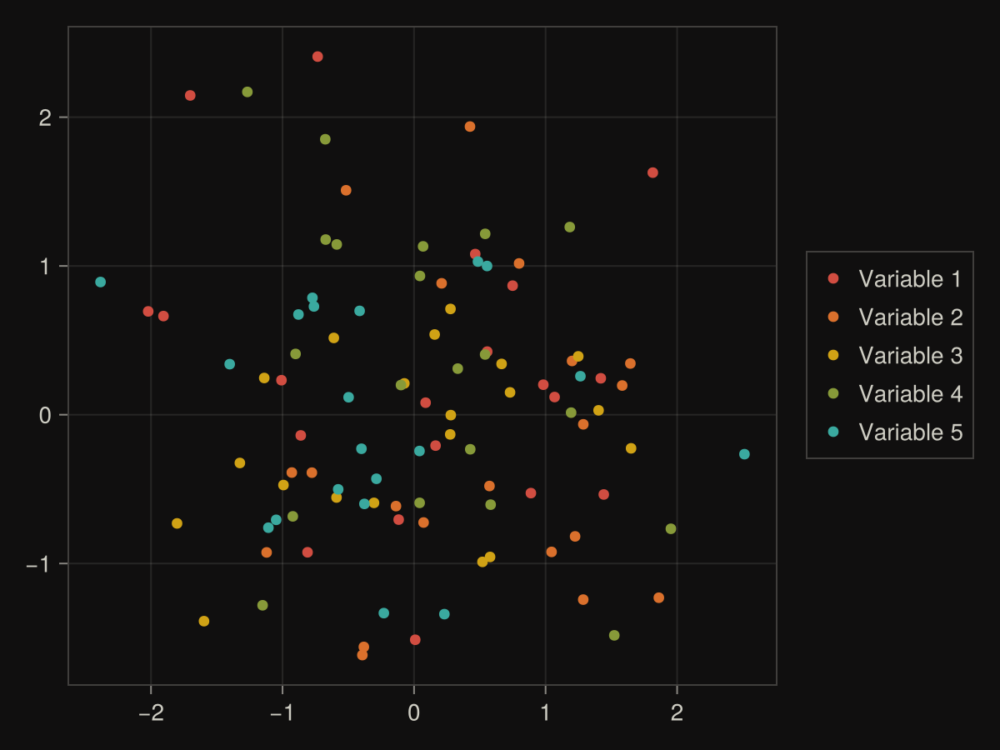

Flexoki
Flexoki color themes for Makie (palette © Steph Ango, MIT — see LICENSE-Flexoki.md).
Color-only by design: these themes set colors (background, text, lines, palette, colormap, 3D lighting, and the color of spines, ticks, grids, and frames) and leave structural chrome — visibility, widths, paddings, fonts, tick sizes — to whichever Makie style theme you choose.
Intended use
These themes use the Flexoki UI palette. They are not scientifically designed perceptual color schemes — they are not optimized for perceptual uniformity, equal lightness steps, colorblind-safe sequential mapping, or similar criteria in the ColorSchemes.jl / scientific visualization sense.
They are intended so figures can match a Flexoki-themed desktop, editor, or terminal. They are not recommended for publication figures where a purpose-built scientific colormap or palette is more appropriate.
Usage
Preferred entry points are color_flexoki(mode::Symbol = :light) and the alias theme_flexoki. Put Flexoki first in merge so its colors win over a style theme:
using Makie, MakieThemes
set_theme!(merge(color_flexoki(), theme_light()))
set_theme!(merge(color_flexoki(:dark), theme_dark()))
set_theme!(merge(theme_flexoki(:dark), theme_dark()))Light
color_flexoki() (default) / color_flexoki(:light) / theme_flexoki():
MakieThemes.demofigure(color_flexoki(:light))
MakieThemes.demoscatter(color_flexoki(:light))
Dark
color_flexoki(:dark) / theme_flexoki(:dark):
MakieThemes.demofigure(color_flexoki(:dark))
MakieThemes.demoscatter(color_flexoki(:dark))